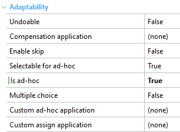

This group of propeties helps you give greater flexibility to processes (in a Business Process Diagram's tasks), so that they adapt to different scenarios, including those that are less structured. They can be found under the node Advanced Properties> Adaptability:  Note that the last three properties are only available when the Is ad-hoc property=True.
|
| Backlinks |
| Interactive Activity Properties |